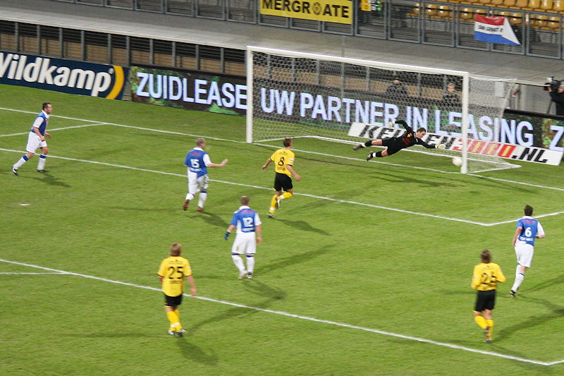

Eredivisionist Roda JC tegen hoofdklasser FC Lienden, achtste finale beker.
Het volle gastenvak. Ook op noord zaten veel supporters van Lienden.
Vanaf het begin werpen de amateurs zich op als hangers en vallers die forse
overtredingen niet schuwen.
Toch komt Roda regelmatig door de muur. Behalve een uitstekend keepende Van
den Top, beschikt FC Lienden ook over een engeltje in de
goal. Hier belandt een schot op de paal.
Na twintig minuten trekt Blom voor het eerst geel.

Vrije trap van Bodor gaat er nèt niet in.
Een kwartier diep in de tweede helft is er een fel opstootje wanneer er weer
een speler van Lienden gaat liggen.
Lienden heeft weinig in te brengen tegen Roda. De geelzwarten weten echter
niet te scoren. Hier wordt de bal van de doellijn geschopt door
een speler van Lienden, (75').
In de eerste minuut van de verlenging opent Roda de score met een diagonaal
schot van De Jong, (92').
Even later scoort Oper via een steekbal van Hadouir: 2-0, (97').
Het beker-avontuur van het dappere FC Lienden is definitief voorbij.
Een opmerkelijk gebaar. De spelers en staf van FC Lienden houden een
hands-up bij de westtribune wat beantwoord wordt met een
staande ovatie.
Daarna wordt het massaal meegereisde publiek bedankt.
Natuurlijk ook vreugde bij onze eigen jongens die vanavond moeizaam de
kwartfinales bereikten.
Het was niet bijzonder druk in de Kickoff wat begrijpelijk is op een
doordeweekse dag. Er kwamen deze keer ook geen spelers opdagen.